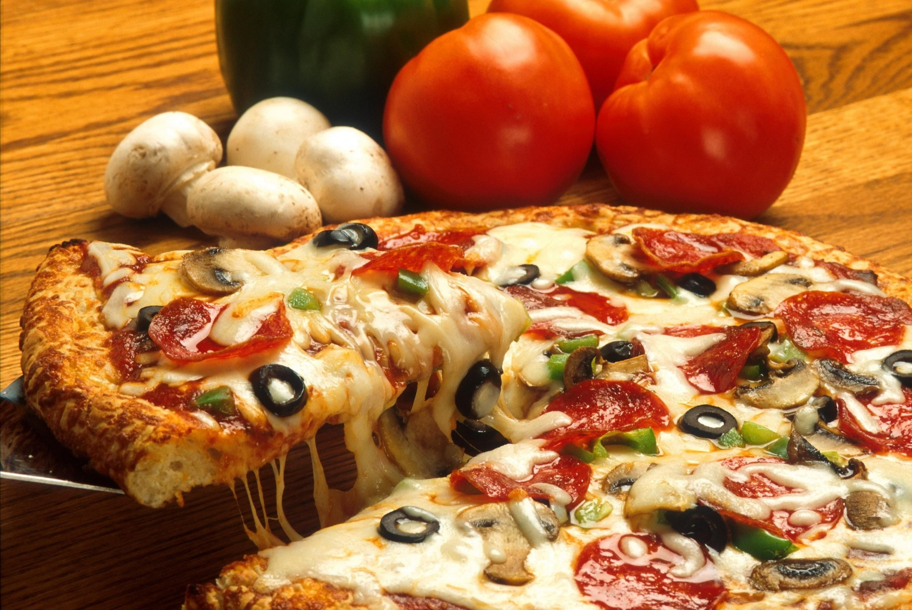

My favorite dish shrimp alfredo. Ever since I was young, I always enjoyed eating shrimp alfredo. The creamy pasta with the combination of well-seasoned shrimp never failed. When I do not know what to get on the menu, this will always be my go-to. It also does not take much skill or time to cook, making it even better.

Amir's favorite dish is beef fried rice. The reason it's his favorite is because he he sees it as a comfort food. He also says that it never disappoints no matter where he gets it from.

| Dish | Ingredients | Quantity |
| Beef Fried Rice | White Rice | 1 Cup |
| Beef Fried Rice | Eggs | 2 |
| Beef Fried Rice | Soy Sauce | 3 tablespoons |
Junrong's favorite dish is pizza. He likes it because it's tasty.
| Dish | Ingredients | Quantity |
| Cheese | Dough | 1 |
| Cheese | Flour | 2 Cups |
| Cheese | Marinara Sauce | 3 tablespoons |
| Cheese | Shredded Cheese | 3 cups |